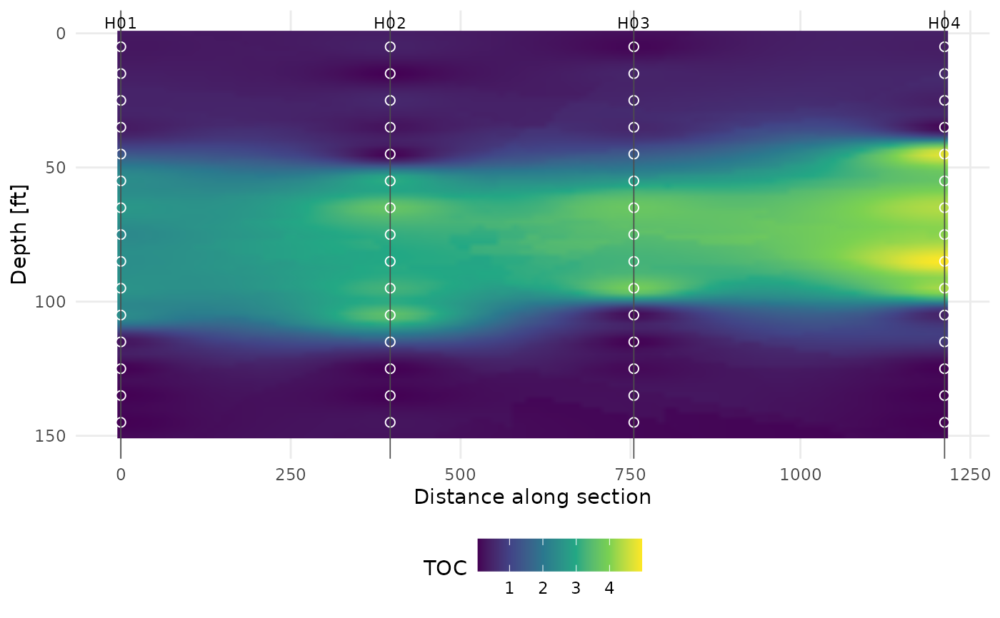

Projects the holes onto a section line, bins samples by depth and
interpolates (IDW) onto a distance-depth grid. holes gives the order
along the line; distances are cumulative straight-line distances between
consecutive holes.
Usage
plot_section(
ds,
method,
analyte,
holes,
breaks = 10,
n_x = 120,
n_z = 80,
power = 2,
maxdist = Inf,
nmax = 12,
aspect = 0.05,
palette = "scholar"
)Arguments
- ds
A
gc_dataobject.- method, analyte
Which analyte.
- holes
Holes in order along the section (at least two).
- breaks
Depth-bin width for
gc_interval_stats().- n_x, n_z
Grid resolution.
- power, maxdist, nmax
IDW controls;
maxdistis in the section's (distance, depth) units afteraspectscaling.- aspect
Depth units per distance unit used to make the IDW search isotropic (e.g. 0.05 when 1 ft of depth should count like 20 ft laterally).
- palette
Sequential palette for
gc_pal()(default"scholar").
Examples
plot_section(gc_example, "SRA", "TOC", holes = c("H01", "H02", "H03", "H04"))
